keindahan seni rupa yang tidak bisa di artikan sebelah mata

pada hari minggu tanggal 20 Oktober 2024 , saya berkunjung ke museum nasional yang bertempat di Jalan medan merdeka no 12 gambir, jakarta pusat. saya datang bersama teman-teman saya yang juga sangat suka, saya sangat antusias untuk mengunjungi museum nasional karena saya sangat ingin mengetahui tentang keindahan seni.
ada banyak sekali yang bisa saya lihat, mulai dari lukisan, patung, dinding bercorak, sampai visuak 3 dimensi. dengan harga tiket masuk yang sangat murah, mulai dari Rp.25.000, saya sangat senang bisa menikmati keindahan seni rupa yang ada di museum. satu hal yang saya pelajari ketika saya berkunjung ke museum nasional adalah cara menikmati proses, mungkin terlihat di mata tidak begitu jelas apa bentuk dari lukisan ini, tetapi ketika saya melihatnya dengan cara yang benar, ada sebuah proses yang sangat menakjubkan. dan proses inilah yang membuat saya kagum akan seni.
terlepas dari semua keindahan tersebut, ada sebuah makna atau arti tersendiri dari lukisan tersebut. lukisan yang dibuat oleh seniman yang bernama Afandi yang berjudul "Potret Diri (1980)" adalah salah satu dari sekian banyak Potret Diri (self-potrait) yang dibuat oleh Afandi. Ia sering menjadikan dirinya sendiri sebagai objek lukisan untuk mengekspresikan emosi, pandangan hidup, atau perasaan pada waktu tertentu. Lukisan ini memperlihatkan wajah yang kuat dan penuh emosi, digambarkan dengan warna-warna berani seperti oranye, merah, hijau, dan hitam.
Affandi (1907-1990) adalah salah satu pelukis paling terkenal di indonesia dan dikenal luas di kancah internasional. ia merupakan tokoh seni rupa modern indonesia yang mengusung gaya ekspresionisme. Affandi dikenal dengan teknik melukis uniknya, yakni menggunakan tangan langsung tanpa kuas, serta sapuan warna yang ekspresif dan emosional.
Galeri Gambar
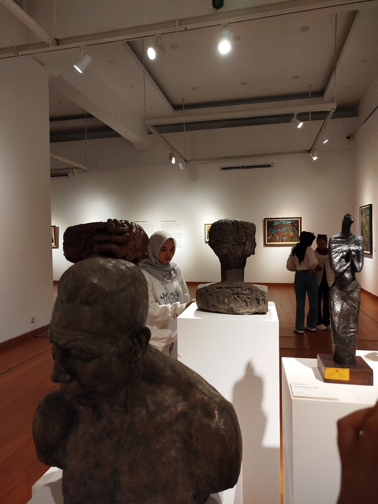
gambar 1
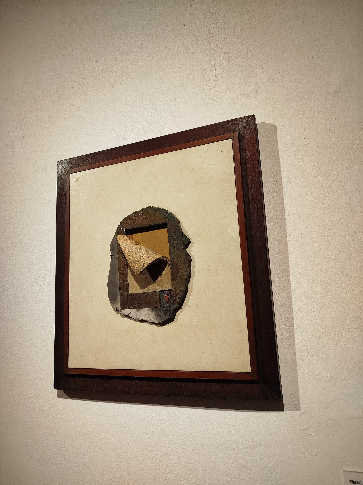
gambar 2
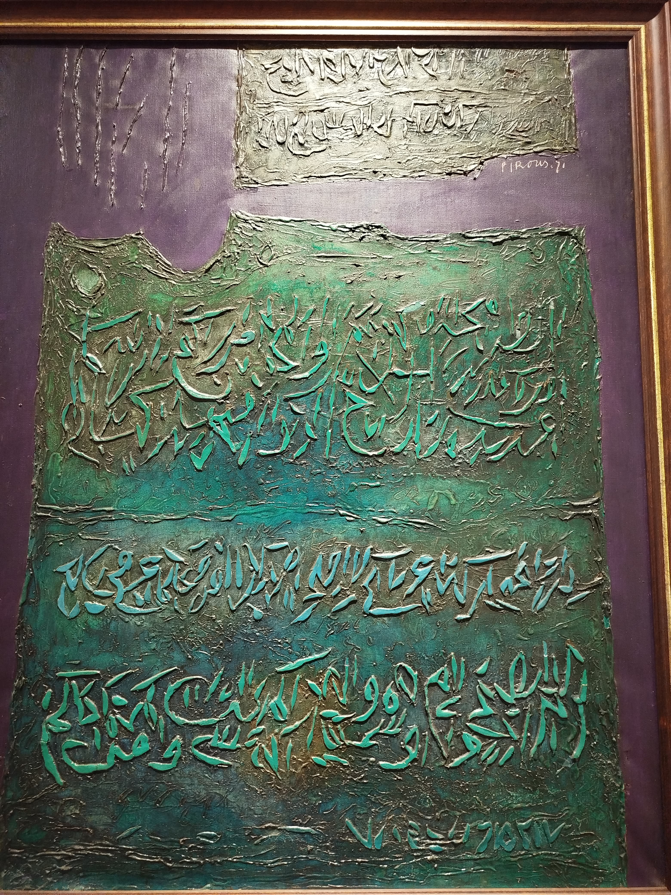
gambar 3
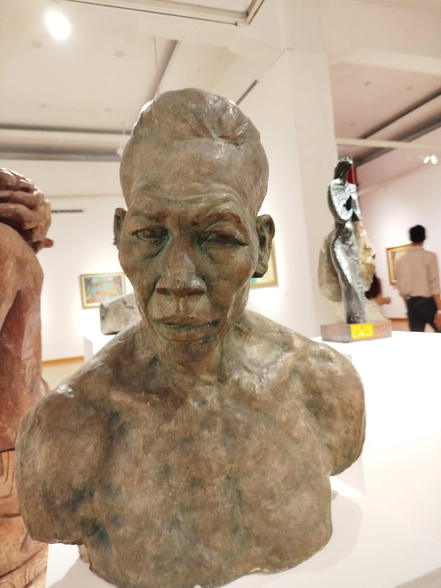
gambar 4
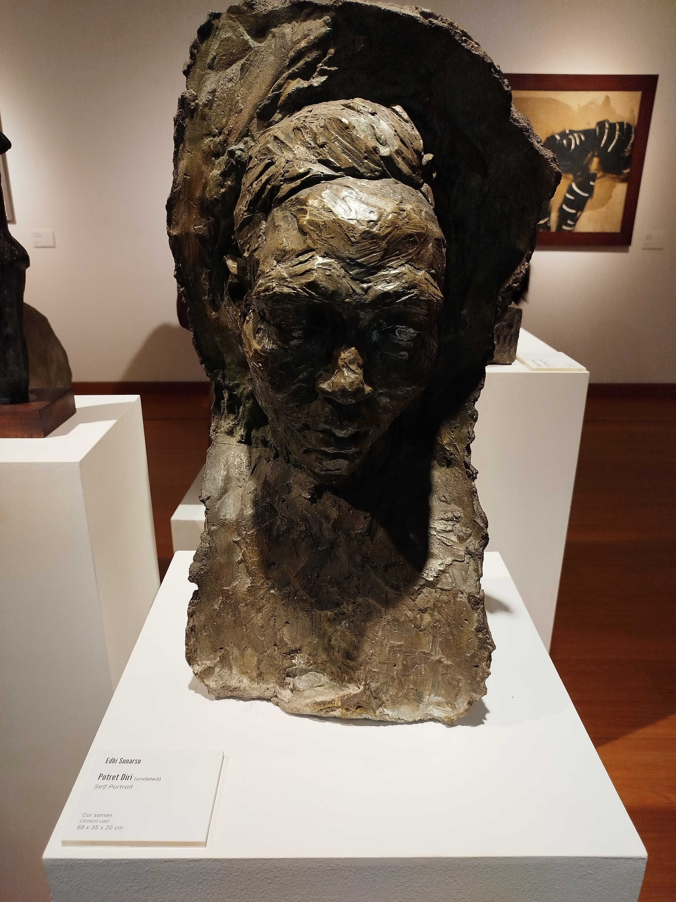
gambar 5
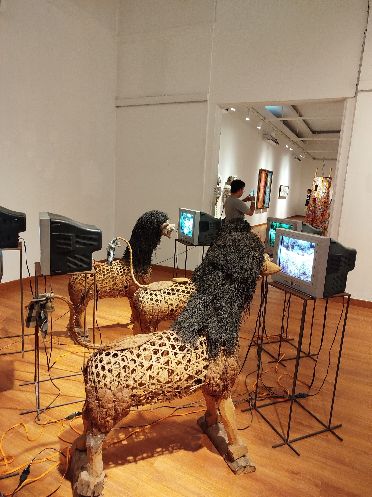
gambar 6
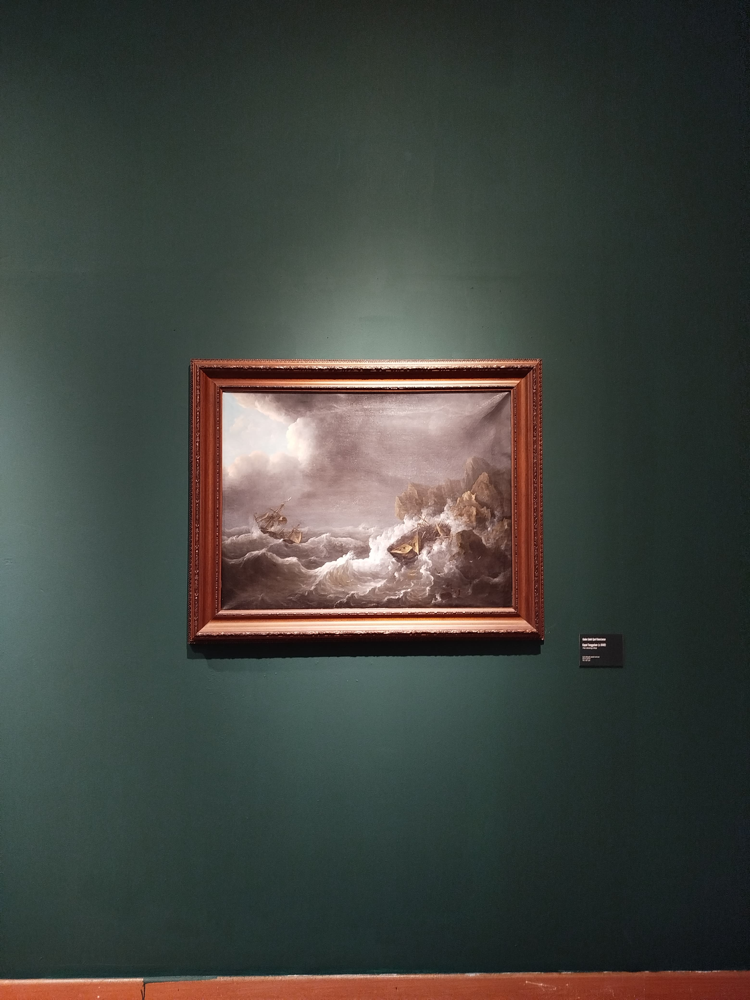
gambar 7
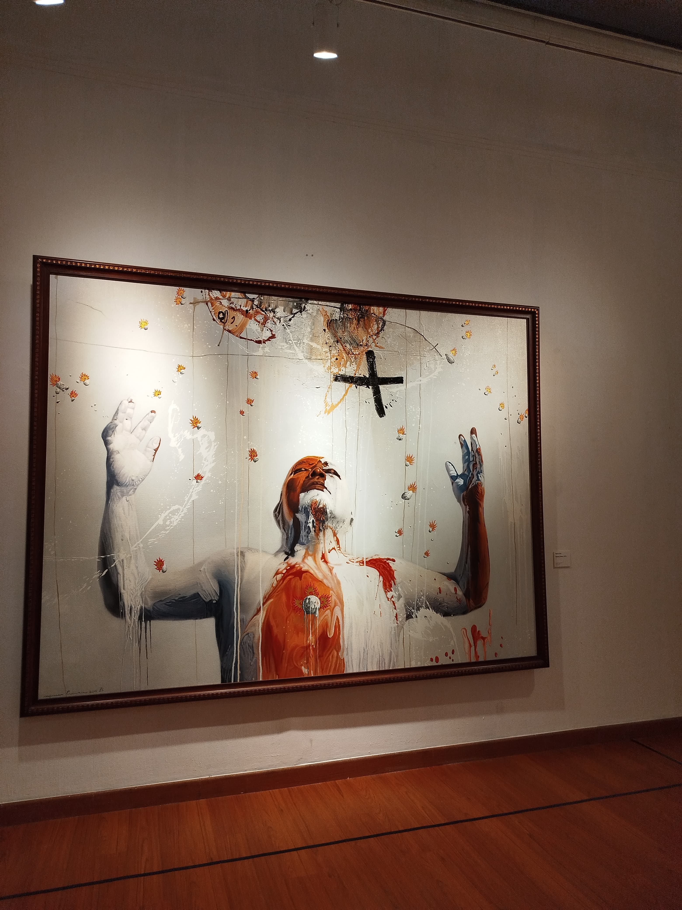
gambar 8
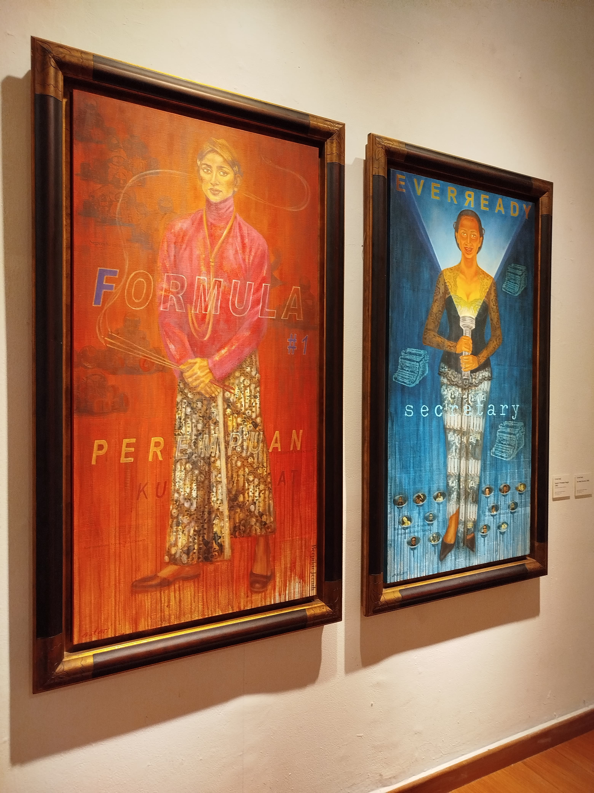
gambar 9
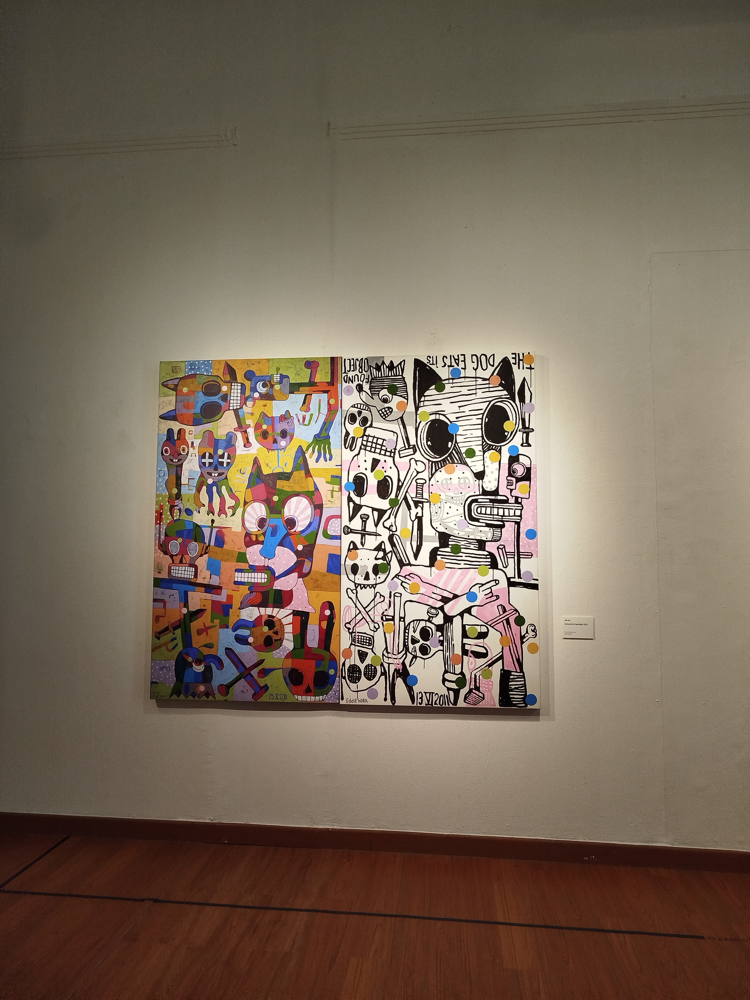
gambar 10
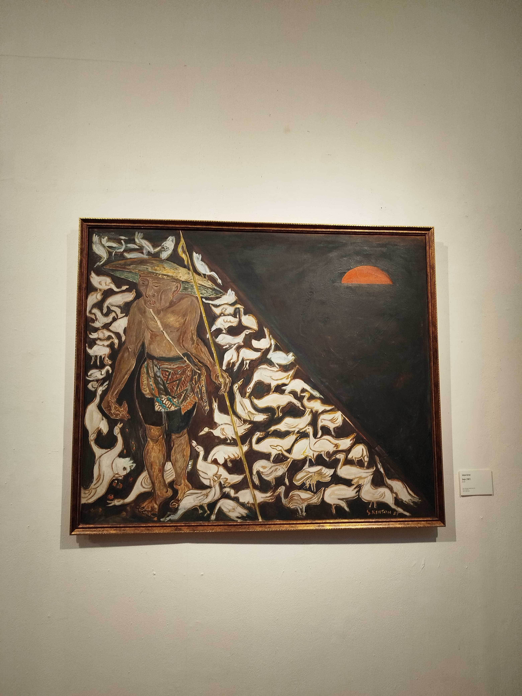
gambar 11